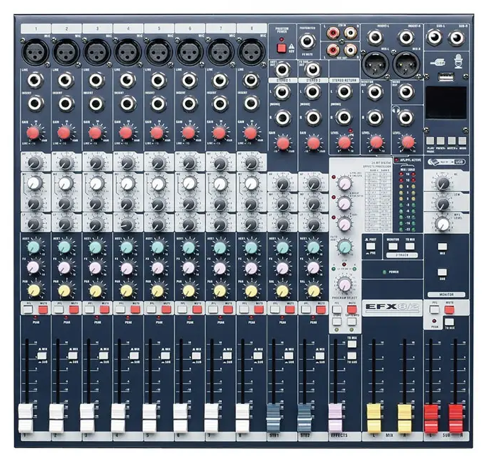

Hardware, grabación en directo y postproducción sonora.
Para grabar un podcast profesional en directo, no basta con un micrófono USB. Necesitamos centralizar todas las entradas y salidas en una Mesa de Mezclas.

Procesa, ecualiza y suma todas las señales de audio en una sola mezcla estéreo.
Es vital que sepáis identificar qué cable va en cada agujero de la mesa para no romper ningún pin:
Tiene 3 pines. Es el cable balanceado profesional que usamos para los Micrófonos. Permite enviar la corriente Phantom (48V).
El extremo pequeño (Minijack estéreo) va a la salida de auriculares del PC. Los dos extremos grandes (Jacks 6.3mm) van a las estradas L y R del canal estéreo de la mesa.
El clásico "Jack gordo" de toda la vida. Lo utilizamos en la salida frontal de la mesa para enchufar nuestros auriculares.
Nuestra mesa analógica profesional tiene muchísimas ruletas y botones, pero nos centraremos en los controles vitales del panel frontal. Cada canal por el que entra un micrófono tiene una tira vertical de controles. De arriba abajo, estos son los más importantes:
Consulta el manual completo en PDF para ver detalles avanzados (subcanal USB, sección Máster y efectos Lexicon).
Un podcast en directo no se puede improvisar. El éxito depende al 90% de lo preparado que esté el equipo antes de darle al REC.
Todo el equipo debe tener delante una escaleta de tiempos (una tabla en Google Docs como aprendimos en el bloque anterior) indicando en qué minuto y segundo exacto habla cada persona y qué efecto de sonido debe sonar.
El técnico del ordenador (conectado al Canal 8) debe tener todos los cortes de música, ráfagas, risas y aplausos perfectamente localizados y cargados en una Tableta de Sonidos (Soundboard) para poder lanzarlos con un solo clic. (Más adelante en el curso, ¡nosotros mismos programaremos nuestra propia tableta de sonidos en HTML y Javascript!).
Aunque hayáis hecho un directo casi perfecto usando bien los faders de la mesa, el archivo de audio "en crudo" que graba Audacity siempre necesita un pulido final antes de publicarse. A esta fase la llamamos Postproducción.
Ejemplo de interfaz multipista: Una pista Mono para la voz (azul) y una pista Estéreo para la música de fondo (verde con dos canales).
Suprimir para borrarlos. Puedes mover los clips de audio libremente en la línea de tiempo para ajustar los ritmos.El volumen entró tan fuerte que la onda "choca" contra los bordes, rompiendo los picos. El audio sonará distorsionado y roto. ¡No se puede arreglar en postproducción!
La onda es sana y dinámica. Ocupa aproximadamente un 80-90% del espacio vertical pero sin tocar jamás los bordes. Volumen potente y limpio.
Apenas es una línea temblorosa en el centro. Si aplicamos normalización en postproducción para que se escuche, multiplicaremos el ruido de fondo (siseo).
Selecciona toda la pista de audio (Ctrl+A) y aplica los siguientes efectos desde el menú superior Efecto:
Cuando guardas tu trabajo (Archivo > Guardar proyecto), Audacity crea un archivo .aup3. ¡Ojo! Ese archivo NO es un archivo de audio, es el archivo de trabajo del programa y no se puede subir a iVoox ni reproducir en el móvil.
Para crear el archivo de audio final que se subirá a internet, debes ir a Archivo > Exportar > Exportar como MP3.
El trabajo culminará con la grabación real en el estudio del centro.
Tendréis que rotar los roles: locutores (frente a los micros), técnico de mesa (controlando faders, ganancias y PFL) y técnico de ordenador (lanzando los sonidos por el canal 8 y grabando en Audacity).